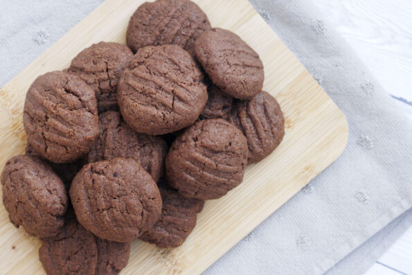

Chocolate Biscuits

Description
These will melt in your mouth. Chocolate fork biscuits that are so simple they are the best and easiest chocolate biscuits to bake with little kids.
Ingredients
- 100g (1/2 cup) butter, softened
- 50g (¼ cup) caster sugar
- 125g (1 cup) Self raising flour
- 10g (1 1/2 tablespoons) cocoa powder
Method
- Get your toddler to measure the butter and cut it into small pieces. If it’s not soft, pop it in the microwave for 10 seconds or so to soften it
and make it easier to mix. Put it in a large mixing bowl. Weigh the caster sugar and add it to your bowl.
- Beat the butter and sugar together with a wooden spoon until it is well mixed and soft. If you have one, you can use a hand held mixer to cream them together.
- Get your toddler to weigh the flour and cocoa powder and add them to your mixing bowl. Keep using your spoons to mix it in, then you can use your hands to
bring it all together in a soft ball of dough. It can be quite a dry dough – add a splash of milk if you need to – and keep kneading it until it stops crumbling
and comes together.
- Get your kids to take small pieces of dough and roll them into balls. You want them to all be roughly the same size (about the size of a walnut) so you might need
to make sure they take the right amount. Place each ball of dough on your prepared baking trays.
Dip a fork in cold water and gently press down on each biscuit ball. My kids enjoy being in charge of this job so I tend to roll each ball so that they’re the
same size and let them do the rest – it’s a great job for even the tiniest of chefs to help with.
- Bake the chocolate biscuits in the oven for 12-15 minutes until they are fully baked. They’ll still be a little soft when they come out the oven but will
harden a little when they cool.
- Remove them from your oven, allow them to cool slightly before leaving them to cool completely on a wire rack.
- Serve and enjoy!